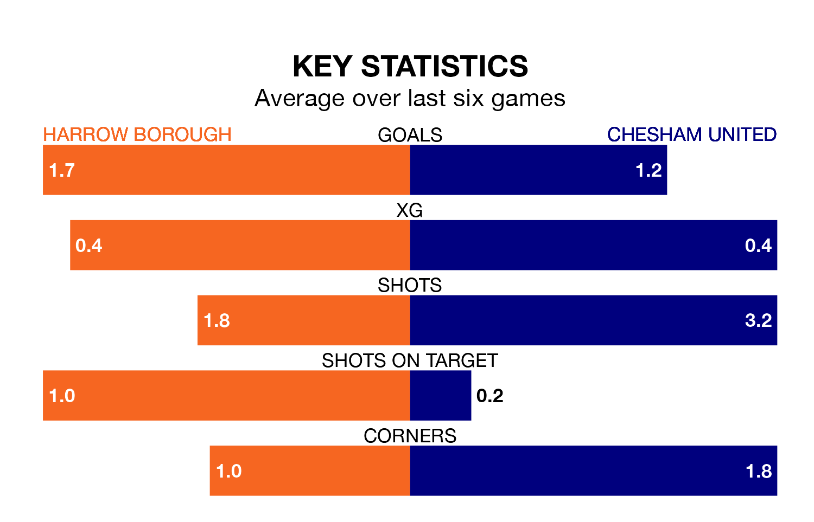

Relegation candidates Harrow Borough face a challenge against high-flying Chesham United at the Earlsmead Stadium on Monday.
Harrow Borough are 21st in the Southern League Premier – South table, and have picked up six wins and nine draws in their 36 games to date.
Chesham, meanwhile, are top of the standings with 84 points, having won 26 and drawn six of their first 37 matches.
With 49 goals in 36 games so far this season, Harrow are scoring at below the league average rate with 1.4 goals per game. And they are conceding more than average, letting in 83 goals at a rate of 2.3 per game.
Chesham, meanwhile, are above average scorers, with 2.0 goals per game, compared to a league average of 1.7. They have conceded 1.0 goal per game.
In the last 10 years, Harrow and Chesham have played each other on eight occasions. Harrow won one of them, Chesham four, and they drew three times.
On average, Harrow scored 0.6 goals and Chesham 1.9 in those matches.
Their last meeting was on January 1, when Chesham won 4-0 at home.
Borough are in disappointing form in the Southern League Premier South, with one win and two draws from their last six games.
With three wins and two draws over that period, United's form is much better – they have taken 11 points from 18, compared to the home team's five.
Harrow's last match was on Thursday, a 4-4 draw against Walton and Hersham.
Chesham beat Hayes and Yeading United 1-0 last time out, on Friday.
Updated: 10:31 (UTC), 31/03/24